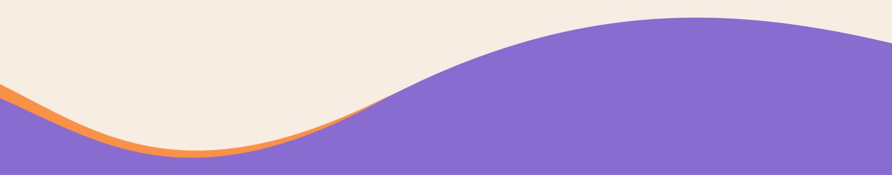
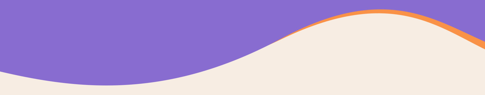
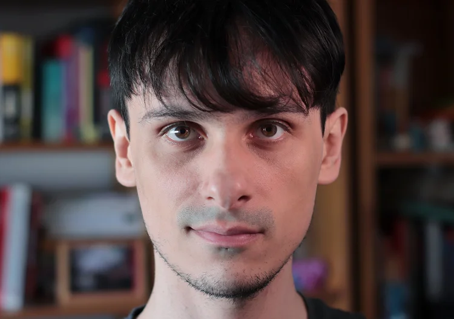
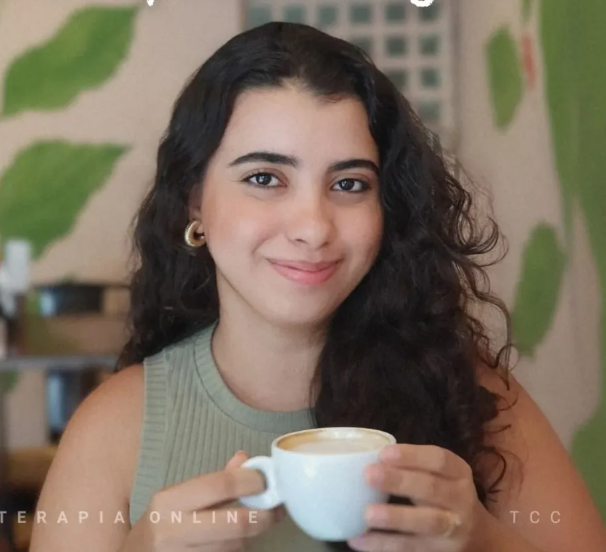
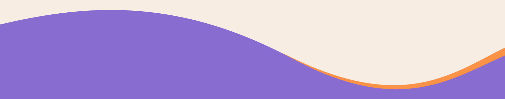

O Motherly Plus é uma iniciativa dedicada a explorar treatments para a depressão pós-parto.

A depressão pós-parto afeta cerca de 17% das mulheres no mundo e, apesar de tratamentos eficazes existirem, o acesso a eles ainda é muito limitado no Brasil. Nosso objetivo é testar uma intervenção inovadora e acessível — uma sessão única de psicoterapia combinada ao suporte do aplicativo Motherly Plus — para o tratamento da depressão pós-parto. Queremos transformar essa evidência em uma ferramenta escalável de cuidado em saúde mental materna no Brasil.

Somos um grupo multidisciplinar de pesquisadores e especialistas da Faculdade de Medicina da USP, unidos pelo propósito de transformar o cuidado com a saúde mental materna através da ciência e empatia.

Pesquisador Principal
Psicólogo
Pesquisadora Associada
Médica Psiquiatra

Pesquisadora Associada
Psicóloga
Pesquisadora Associada
Psicólogo
Pesquisadora Associada
Psicóloga
Pesquisadora Associada
Psicólogo
Pesquisadora Associada
Psicólogo
Pesquisadora Associada
Psicóloga
Pesquisadora Associada
Médica Psiquiatra
Pesquisador Associado
Médico Psiquiatra

Você poderá participar caso se encaixe nos seguintes critérios:
(1) Ter entre 18 a 40 anos de idade
(2) Até 12 meses após o parto
(3) Ser alfabetizada
(4) Possuir um smartphone funcional com Android para uso pessoal
(5) Não estar em tratamento farmacológico e/ou psicoterápico nas últimas quatro semanas
Além destes, iremos investigar se você preenche critérios para transtorno depressivo maior utilizando questionários que serão aplicados ao longo do processo de coleta.
A participação dura 8 semanas e acontece inteiramente online. Após a triagem, você será sorteada para um dos dois grupos: tratamento imediato ou lista de espera de 4 semanas. O tratamento consiste em uma sessão única com uma psicóloga da nossa equipe e acesso ao aplicativo Motherly, com áudios, leituras e ferramentas de apoio ao bem-estar.
Ao longo de 8 semanas, pediremos que você responda alguns questionários em quatro momentos diferentes — para acompanhar como você está se sentindo. Tudo acontece pelo celular, no seu tempo.
Ao participar, você terá acesso gratuito a atendimento psicológico especializado e ao aplicativo Motherly Plus — com ferramentas, áudios e conteúdos pensados para a saúde emocional de mães. O tratamento foi desenvolvido para reduzir sintomas de tristeza e ansiedade e melhorar o bem-estar no dia a dia.
Todas as participantes recebem o tratamento — seja de imediato ou após 4 semanas. Além do benefício pessoal, sua participação ajuda a construir evidências para que mais mães tenham acesso a um cuidado de qualidade no futuro.